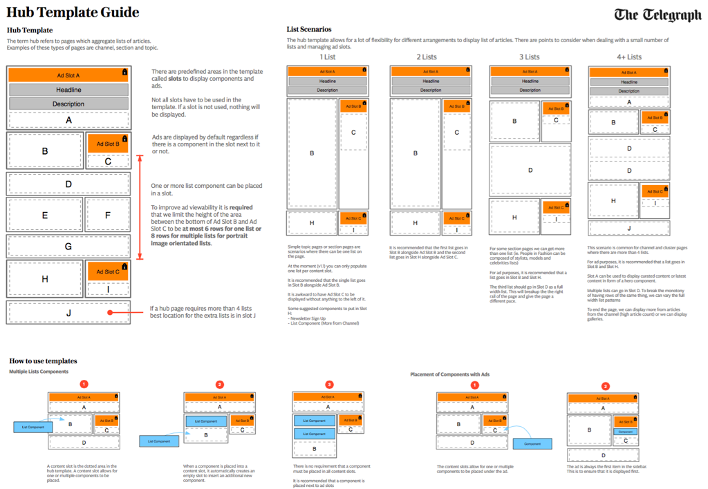
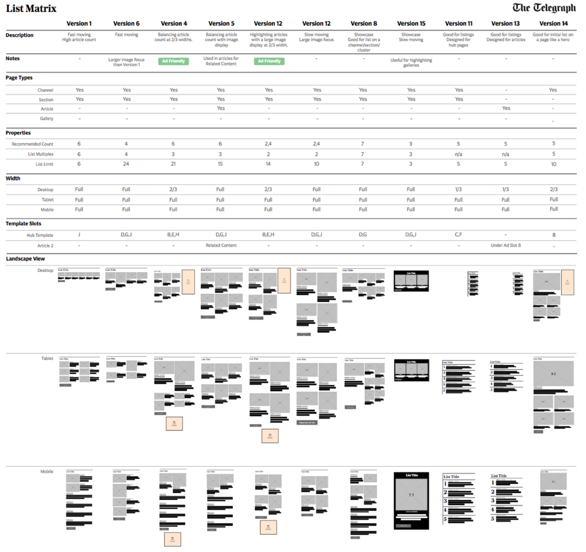

This case study was chosen to highlight a modular design system
The Brief
In 2015, the Telegraph decided to improve the website so that it can stay competitive in the digital space. The Fashion section was selected as the first area to get updated because it was using a legacy content management system (CMS) that was no longer being supported. This allowed the team to experiment and get something out earlier so that we could learn on how to iterate the components to help roll out of to the rest of of the site.
The original site (left) and early design (right)
The Process
The product team consisted of a product manager,2 visual designers, 2 UX designers, and 1 prototyper. We worked closely with the editorial team and SEO teams in an agile way to take designs to productions
First, we had to formulate a new information architecture for the new platform.
Page templates
To help the editorial staff understand the new structure, we asked them to map content that they were writing to the new structure. This daily task helped us collaborate closer with editorial and allowed us to help with the transition from the old system to the new system. To test the structure we mapped journeys of existing content to ensure that the user navigation would flow naturally.
Mapping reality to the model
Next, we needed to design a modular system of components that would work responsively. Through design discussions and sketching we created a rough guide of what we needed. I created a styleguide prototype (http://monza-pattern-wip.appspot.com/) to explore how these components would work. Based on the learnings, I formulated and documented a guide to the system
Working out how to organise lists
Documenting how templates work
Describing lists usage
One of the challenging design decision was what should the hero block look like? The visual design direction was something more dynamic and organic. Responsive websites are traditionally blocky because it makes it easy to implement. Our initial attempt at creating the prototype took away a lot soul from the design direction. This was something that could make the brand from a product angle so we decided to put some effort to making this work.
Prototyping the design
We iterated and explored many variations from dark moody tones to lighter airy experiences with the use of background images.
Design exploration
We explored the designs but decided and agreed with editors to simplify the hero block to 3 articles.
The next challenge to the hero block was identifying which combintation of picture orientations worked so that we could create rules in our system.
Documenting edge cases
The Outcome
The major target for the team this year is to migrate the whole website over to the new platform. We were able to get the first section along with authoring the content on the new CMS system in 6 months. Along the way we need to ensure that we are meeting or exceeding the current KPI measures such as ad viewability. With the first releases we were able to increase the viewability of ads by 15%.
We worked in an agile process. For some designers this was a new thing of not being able to build the “perfect” design as a version one. However, along the way we built trust that we are all there to all deliver a quality product to the user. Over time, we improved communications between teams and got to iterate and improve our designs.
Evolving design